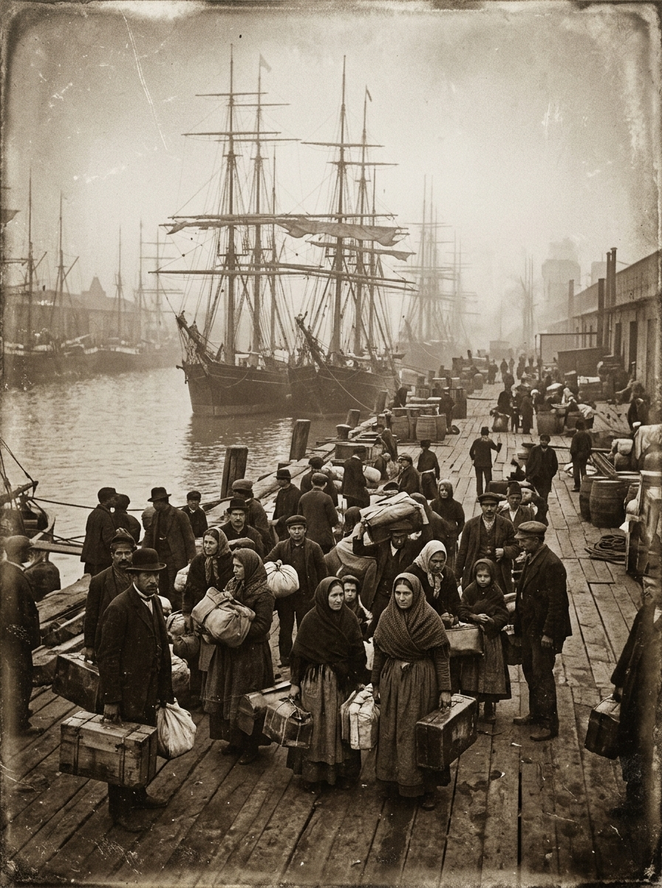
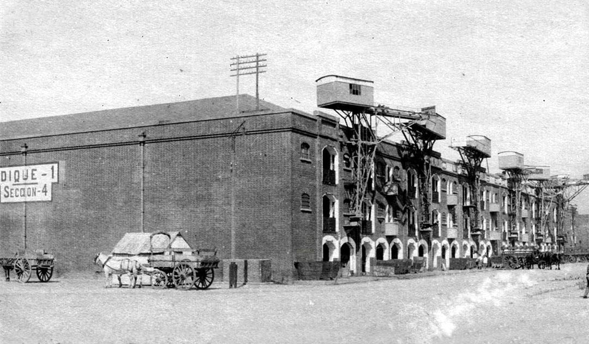
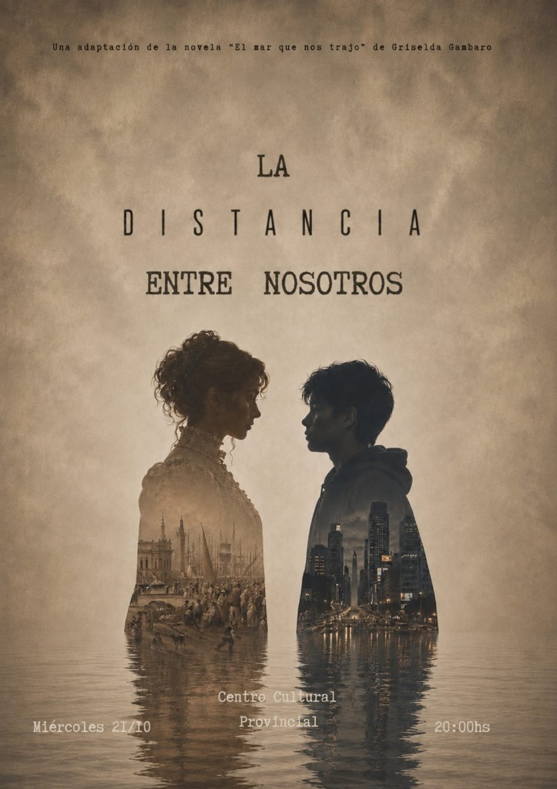

El amor
Que sobrevive a los océanos, a los silencios y a los años.
Teatro · Estreno · Octubre 2026
La Distancia Entre Nosotros es una adaptación teatral de la novela “El Mar Que Nos Trajo” de Griselda Gambaro. A través de una historia marcada por la distancia, los vínculos familiares y el paso del tiempo, descubrimos cómo las decisiones, las separaciones y los reencuentros dejan huellas en la vida de las personas.
Una historia sobre el amor, la memoria y los lazos que permanecen a pesar de todo.
Una historia que atraviesa generaciones: de los barcos que llegaban cargados de promesas a las ciudades de hoy, donde todavía resuenan las voces de quienes vinieron antes.

Un barco, una despedida, una promesa que cruza el océano.

Una ciudad que guarda recuerdos de quienes dejamos atrás.
Que sobrevive a los océanos, a los silencios y a los años.
Lo que heredamos sin saberlo; lo que guardamos sin nombrarlo.
Hilos invisibles entre quienes se fueron y quienes se quedaron.
"La distancia entre nosotros es una obra emocionante y cautivadora desde el principio hasta el final. Con actuaciones acertadas y una dirección impecable. Pude conectar con la historia de inmediato con el público gracias a su frescura y naturalidad. La puesta en escena, tan cuidada como envolvente, hace que el tiempo se pase volando. En conclusión, es una experiencia artística completa, conmovedora y profundamente disfrutable, una recomendación absoluta para quienes buscan buen teatro ¡Totalmente imperdible!"
Una historia de amores, separados por el océano, pero que nunca murió.
Descargar afiche ↓
Se pueden comprar en la portería de la escuela Niño Jesús a $8000
O se puede comunicar al +54 9 3426 50-7287 para la venta.
Solo se puede recibir efectivo en ambas opciones.
Contactar por WhatsApp →